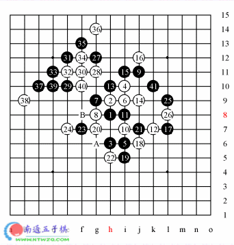
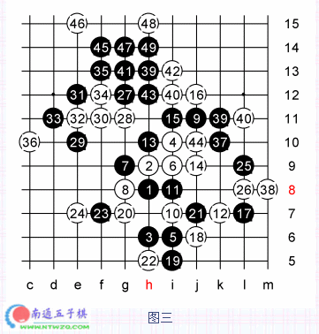
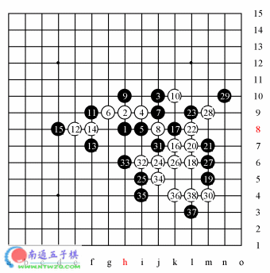
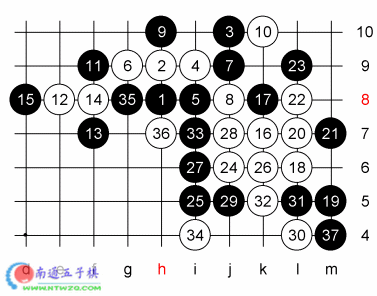
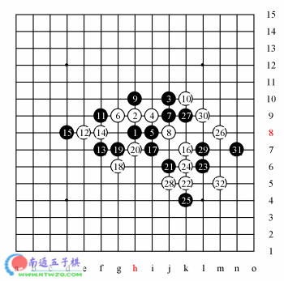

“大龙擂”棋局点评
#1 “大龙擂”棋局点评 作者：有志青年 发表时间：2006-2-6 13:58:04

本次龙潭庙会期间，组织者为来到的游客和爱好者们安排了多埸精彩的表演赛，这些比赛主要以表演性质为主，所以用时上稍微少一些，但对局者一般都很认真，下出的棋还是很有观赏性的。而且也确实吸引了许多观众驻足于台下。
这盘棋是陈伟七段与李睿凡二段的对局。由陈伟开局。李睿凡没有换，而是选择了瑞星执白。前11手都是定式。白12选择了流行的通二路的变化。黑13是较强的的几种应法之一，常见的还有14、A等着法。世界杯期间白14走21点的棋很多，黑防于右方之后白棋再防于B点或15，但实战的走法也是很强的。至23手正常。24手据说是最近流行于email通讯战中的一种走法。李睿凡决定尝试着走一下这个变化。25在右边交换了一手，意图是扩大优势，占一些便宜，将来可以增加一些借用。26手唯一。27手好棋。黑棋在做好准备之后，摆出了进攻的架势。28手也算比较强的防法之一。不过似乎有些不主动。也许应该先走K11或K10之类的点，用一些先手的棋去防守，这样局面也许会复杂一些，很难说是好是坏。29手又是很强的一手棋，走到这里白棋很头疼。当时在大盘上讲棋的于京平六段认为黑棋有较大的优势。如果不防黑棋的跳二，比如E11，黑棋在F11活三，白棋必须防于上方，否则黑棋H13、K10、L11后在N9双杀。但防于上方黑棋的优势就太大了。实战白棋还是选择了防在F11。31手是明显的好点如果31-E11，则白32-31简单防住。据赛后的拆解此时黑棋已经 必胜了，陈伟七段认为32-F10要强一些，不过黑棋还是能赢，如图一。李睿凡尝试了一下32-34，但还是不行，如图二。实战白棋选择了活三。则此时34手是急所。35活三，如果白棋防于下方，则黑棋可如图三取胜。因为当黑棋在K10活三时，如果白棋防于上方，则黑L11后在N9双杀。这个强大的手段使黑棋有了强大的借用。防于上方后，看似黑棋可以在K11活三后VCF，但在12这条线上有反四。37、39后，白棋如果防于外面，则黑棋简单速胜，出于一拼的想法，白棋防在了里面，如果黑棋次序有误，先在D12活三，则白棋防于下方后有反V。但执黑的陈伟七段是不会给对方这样的机会的，黑41手活三后，白必须防于下方，43-D12，白棋必须防于D9，或先在F9冲四，但无论怎样黑棋以下都能VCF取胜。
白棋看到这个局面后，遂投子认负。这盘棋以陈伟七段的胜利结束。赛后于老师对24手提出了质疑，陈伟七段也觉得白这么走有些弱，他认为24-40可能强一些。看来这个变化还有待进一步的研究。

#2 Re:“大龙擂”棋局点评 作者：有志青年 发表时间：2006-2-6 14:07:44

这盘棋是胡夕三段与李睿凡二段的对局。疏星开局，前11手正常。白12还有一种常见的走法，12-L9。但那个变化对杀激烈，比较难于把握。实战白棋选择了这个较为平稳的变化。至16手是世界杯中尼斯科夫在和世界冠军Ando的比赛中走出来的变化，那盘棋Ando取得了胜利，但事后证明黑棋的走法是不对的。白棋可下。在不久以后的上海十强赛中出现过两次，一次是张进宇七段执白对葛凌峰，并最终战胜了对手，另一盘执白者是包海滨初段，当时执黑的就是胡夕三段。
可能是那盘棋对方本来有必胜没走出来，胡夕对她那次走的17-22不太满意。换了一种防守方法。白棋冲四后团角，这是较常见的棋形。21防住对方的一个二，自己形成两个二。22活三，应该说，这时白棋出现了误算，通常情况下白棋可以在这种局面下取胜，但由于黑11的存在，使得具体情况有所不同。如果当时计算正确，也许白棋会走一些比如Ｍ８之类较为平稳的棋。23必须，否则黑26、M８速胜。２４活三，黑棋如果防在上方，看似黑棋有反Ｖ，但白在２６活三，速胜。２５正确。这时白棋已经渐渐意识到强攻难以取胜了。２６手明显有欺骗的意图，因为两边都需要一些计算量，而胡夕三段十强赛后一直没有下棋，状态不是很好。而且即使白棋走对也还是可以下的。实战中黑棋果然上当，白棋冲四后单作四三反先。如果黑单防，则白棋３４、Ｊ４、３３ＶＣＦ捉四四禁手胜。黑３１反三，以下白棋反冲后连续进攻胜。
下图是黑27反挡后的一些变化，大家可以自己再拆一拆。

#3 Re:“大龙擂”棋局点评 作者：有志青年 发表时间：2006-2-6 14:08:34

这盘棋是胡夕三段与姚金蕊二段的对局。这是胡夕当天下的第二盘表演赛，同样是蔬星开局，前十六手与上盘棋一样，可能是觉得以前走的两盘棋都防的不是很好，所以决定走一个对杀的走法—I7。实战中18走在了G6，但这个防点似乎不是很好，陈伟老师和崔悦老师都觉的18防在20处比较好。黑21无理，似乎只是为了防守。22好棋，抢回先手，夺取主动。23若防于24处，则白在23冲四后再占取30点大优，接近必胜。实战23盖冲，24活三，25若防于上边，则白26、28速胜。26漂亮！凶狠而飘逸，白必胜。黑棋有多个三三禁，没法防。实战27防在K9点，使白无法抓L8的禁手，但28、30、32后还是抓禁。
#4 Re:“大龙擂”棋局点评 作者：小玄 发表时间：2009-3-26 21:14:06
第一篇的图片有问题 , 读不到